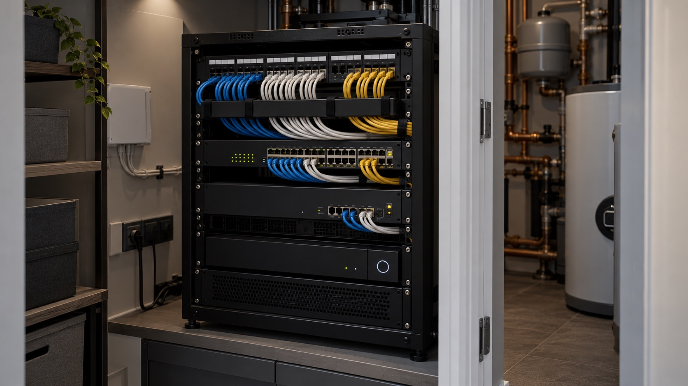
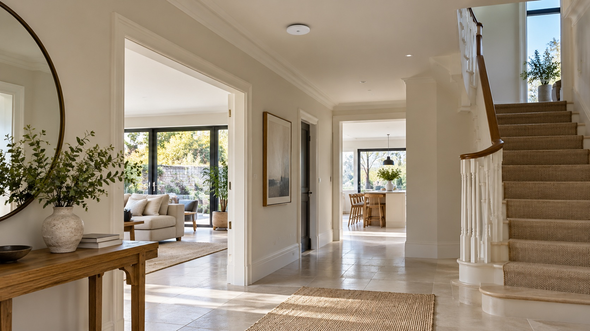

Wi-Fi planning
Plan access point positions around the layout, building materials and the rooms where you need dependable coverage.
HOME NETWORKING
A dependable home network starts with a plan for your rooms, devices and how you use them every day.
Get in touch
CONNECTIVITY, ROOM BY ROOM
Every home is different: walls, floors, the position of the router and the devices you rely on all affect how a network feels day to day. We plan the connections around the property, not just the broadband entry point.

WIRED AND WIRELESS, WORKING TOGETHER
Where appropriate, wired connections can support fixed equipment and wireless access points can extend coverage into the rooms that need it. We can also bring the core equipment and cabling together neatly in a dedicated location.
Understand where you work, stream, play and connect before deciding on equipment positions.
Plan cabling for access points, televisions, offices and other fixed devices.
Organise network equipment and explain the setup, so it is easier to manage over time.
A NETWORK YOU CAN RELY ON
We look at coverage, cabling and equipment together, then shape a setup for the way your household connects.
Plan access point positions around the layout, building materials and the rooms where you need dependable coverage.
UniFi equipment can be designed and installed where it suits your home, needs and wider system.
Structured cabling for access points, offices, televisions and other fixed equipment, planned for the property.
Install and configure the chosen router, switches and access points as one coordinated network.
Locate and arrange network equipment in a considered, accessible place with connections brought together neatly.
Review the existing network, identify where performance drops away and discuss practical improvements.
START WITH A CONVERSATION